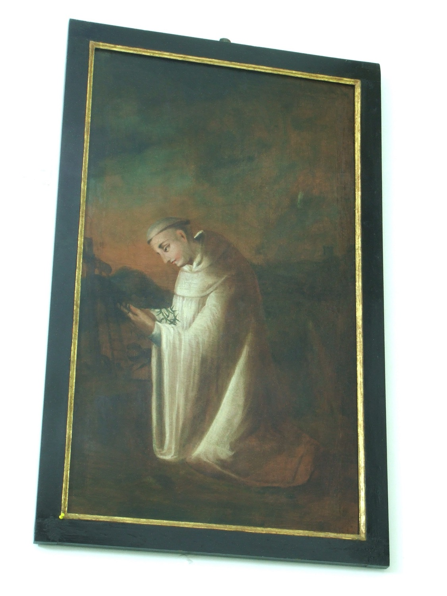

San Bruno (1027–1101) fue el fundador de la Orden de la Cartuja. Es conocido por su vida de silencio, soledad y oración. Renunció a una carrera eclesiástica destacada para retirarse a una vida monástica, buscando una relación más directa con Dios.
En este cuadro aparece vestido con el hábito blanco cartujo y la cabeza tonsurada. Su postura, arrodillado en actitud de contemplación ante un crucifijo y una corona de espinas que sostiene en las manos, recuerda el principio cartujo de que el camino hacia el cielo pasa por la meditación constante en la Pasión.